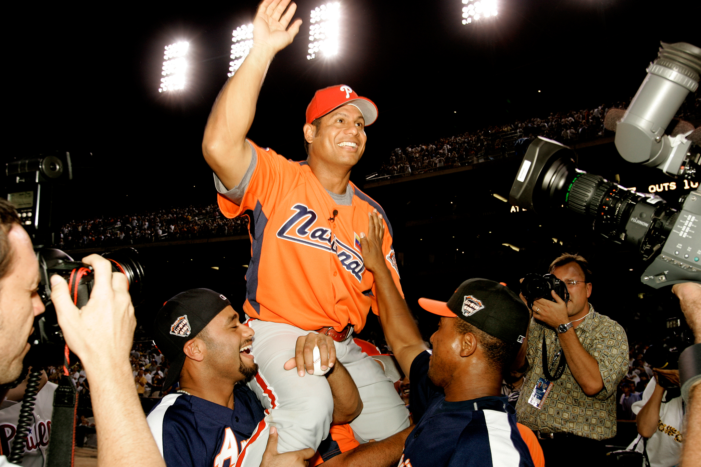

Derby History
1985: First Home Run Derby takes place in Minneapolis
1991: Format changes to 3-round contest, with players needing to hit as many home runs as possible before reaching 10 outs each round
2000: "Match-play" style method introduced for second round, discontinued in 2003
2005: Bobby Abreu hits then-record 41 homers, 24 of them coming in Round 1
2014: Format changes significantly; in hopes to speed up contest. Bracket format is created.
2015: Outs are removed from competition and replaced with a time limit
